Abstract
A sliding-window inference strategy is commonly adopted in recent training-free open-vocabulary semantic segmentation methods to overcome limitation of the CLIP in processing high-resolution images. However, this approach introduces a new challenge: each window is processed independently, leading to semantic discrepancy across windows. To address this issue, we propose Global-Local Aligned CLIP~(GLA-CLIP), a framework that facilitates comprehensive information exchange across windows. Rather than limiting attention to tokens within individual windows, GLA-CLIP extends key-value tokens to incorporate contextual cues from all windows. Nevertheless, we observe a window bias: outer-window tokens are less likely to be attended, since query features are produced through interactions within the inner window patches, thereby lacking semantic grounding beyond their local context. To mitigate this, we introduce a proxy anchor, constructed by aggregating tokens highly similar to the given query from all windows, which provides a unified semantic reference for measuring similarity across both inner- and outer-window patches. Furthermore, we propose a dynamic normalization scheme that adjusts attention strength according to object scale by dynamically scaling and thresholding the attention map to cope with small-object scenarios. Moreover, GLA-CLIP can be equipped on existing methods and broad their receptive field. Extensive experiments validate the effectiveness of GLA-CLIP in enhancing training-free open-vocabulary semantic segmentation performance.
Motivation
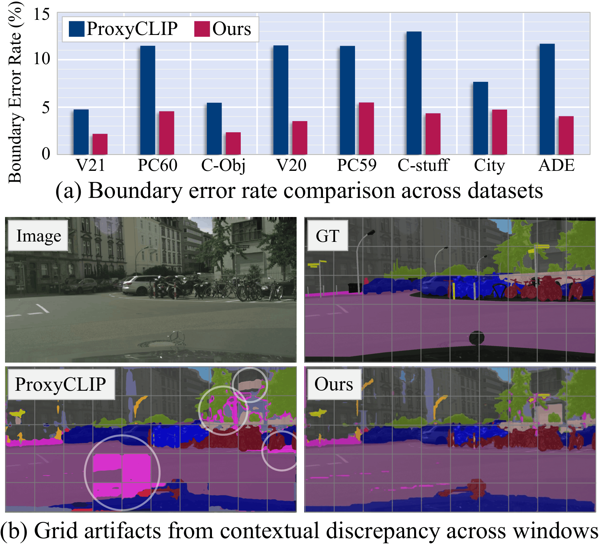
(a) We evaluate segmentation inconsistency using the Boundary Error Rate (BER). BER is defined as the proportion of pixels near adjacent window boundaries where predicted labels differ despite identical ground-truth. ProxyCLIP yields high BER due to its lack of cross-window interaction, whereas BER is significantly reduced in ours by incorporating global context into attention process.
(b) ProxyCLIP exhibits grid artifacts (marked with white circles), caused by the limited receptive field within individual windows. In contrast, ours mitigates these artifacts by leveraging contextual information beyond local windows.
Method
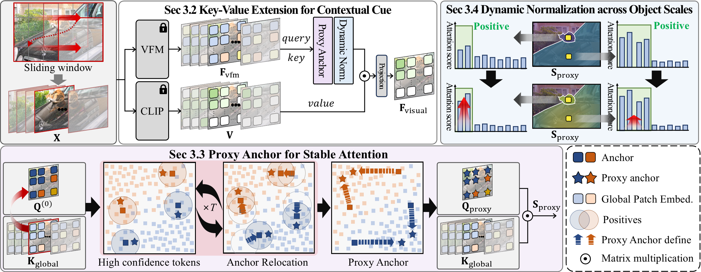
Sec 3.2 Key-Value Extension: We construct global key-value tokens by aggregating VFM features and CLIP value tokens across all windows, enabling attention to access full-image context.
\[ K_{\text{global}} = [F^{(1)}_{\text{vfm}}; F^{(2)}_{\text{vfm}}; \cdots; F^{(L)}_{\text{vfm}}] \in \mathbb{R}^{(LN) \times D} \]
\[ V_{\text{global}} = [V^{(1)}; V^{(2)}; \cdots; V^{(L)}] \in \mathbb{R}^{(LN) \times D} \]
Sec 3.3 Proxy-Based Attention: We mitigate inner-window locality bias by replacing queries with a proxy aggregated from high-similarity tokens across all windows, enabling globally consistent attention.
Sec 3.4 Dynamic Normalization: We introduce scale-aware dynamic normalization that adaptively shifts and scales attention based on object size and global context, suppressing noise from irrelevant tokens.
Final Attention Form
- Global Context Query: Queries are replaced with proxy representations that aggregate global semantic context.
- Window-Invariant Key: Keys are constructed from global tokens, independent of local window partitioning.
- Scale-Aware Attention: Attention is dynamically normalized to account for object scale and the increased number of tokens, enabling effective masking and sharpening.
Attention Visualization
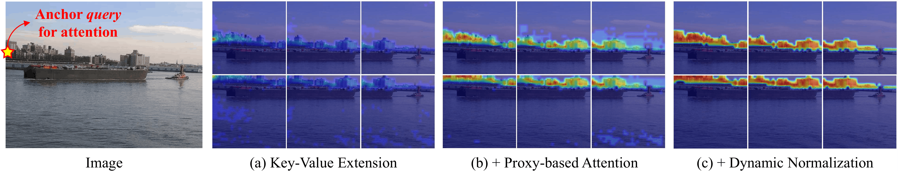
- (a) Locality Bias: Attention is initially concentrated within the inner window, showing limited ability to capture object-level structure. Although introducing Key-Value Extension, it remains biased and inconsistent across window boundaries.
- (b) Proxy-Based Attention: Introducing proxy queries enables globally consistent attention, naturally extending across the entire object and overcoming window bias.
- (c) Dynamic Normalization: Scale-aware normalization suppresses irrelevant regions, allowing the model to focus on meaningful object areas and produce cleaner, more precise attention maps.
Results

- Flexible Adaptation: Our method can be seamlessly applied to various CLIP-based baselines, including ClearCLIP, SCLIP, and ProxyCLIP.
- Dataset-Agnostic: It does not require any dataset-specific hyperparameter tuning, ensuring robust generalization across different benchmarks.
- Strong Performance: Despite being training-free, our approach outperforms training-based baselines such as CLIP-DINOiser.
Visualization
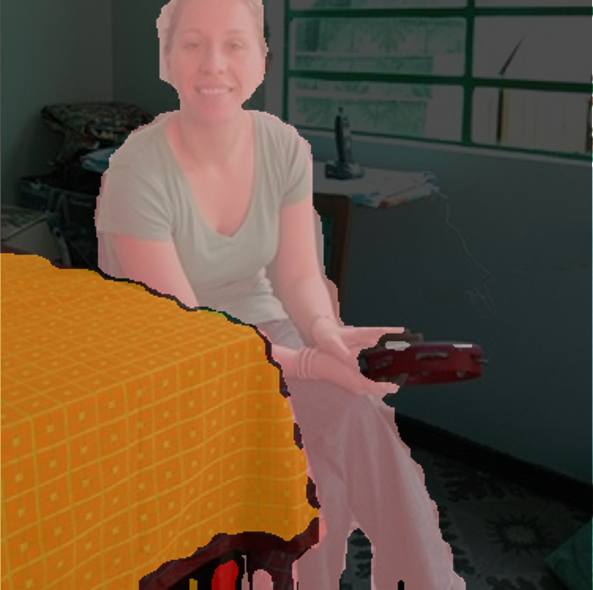
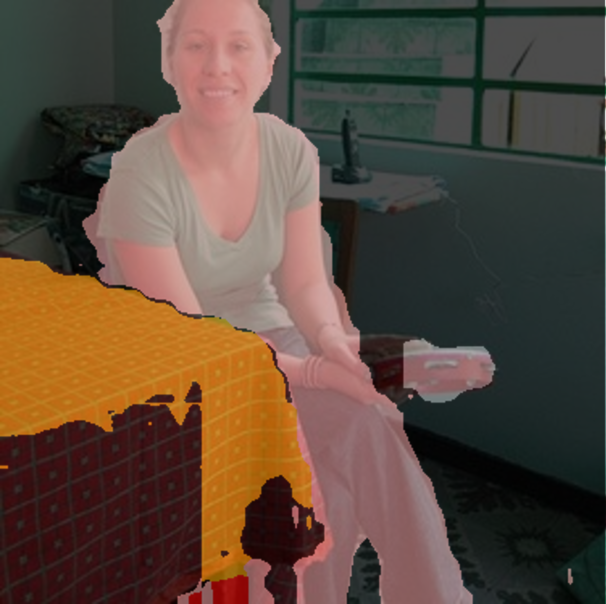
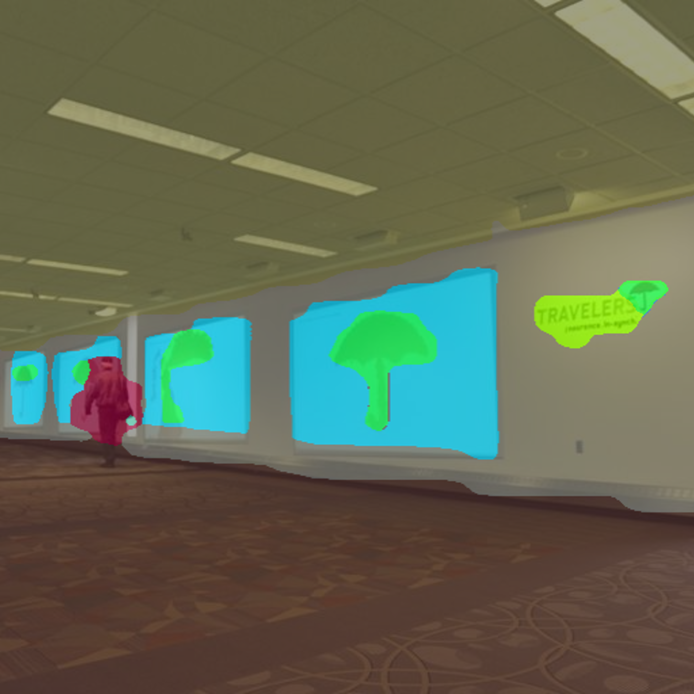
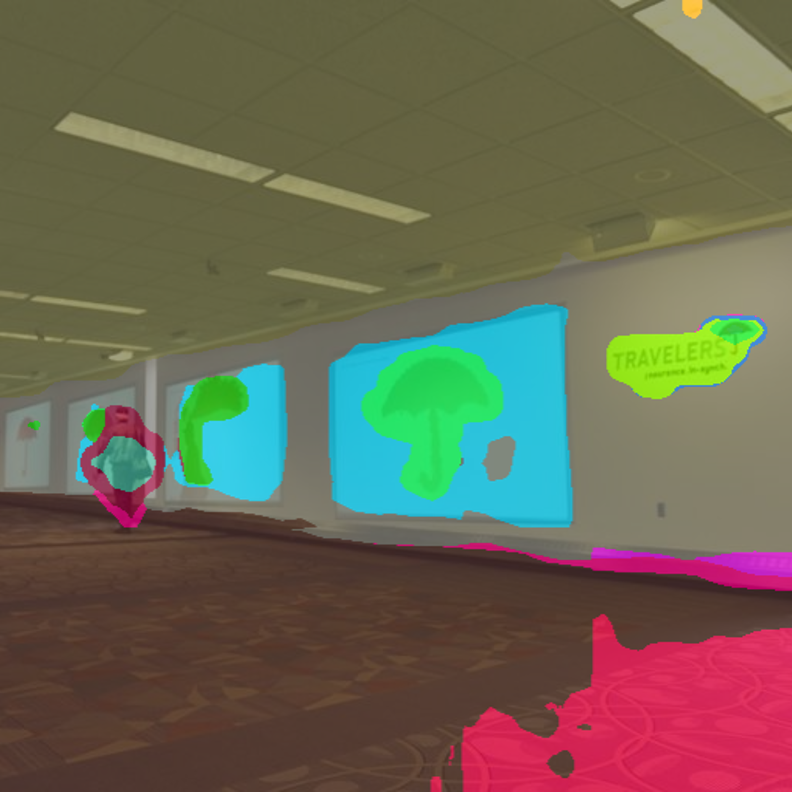
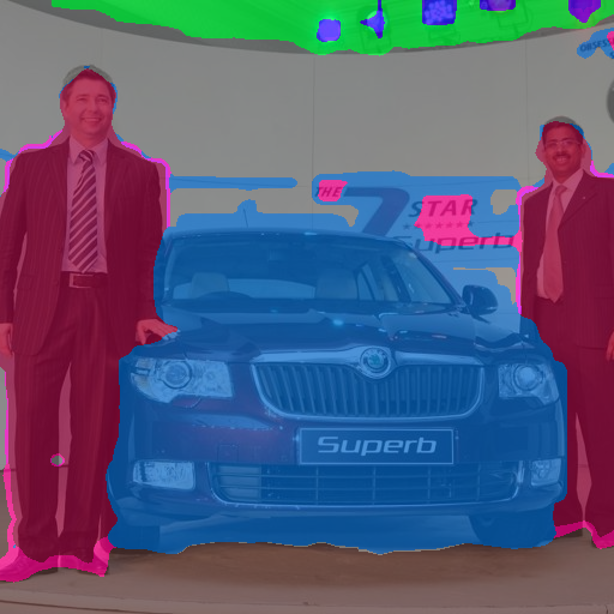
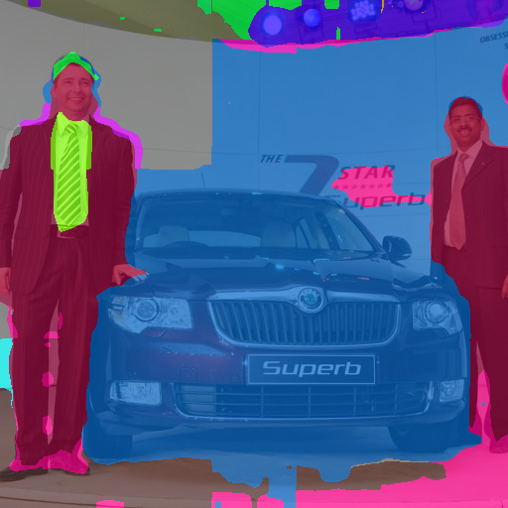


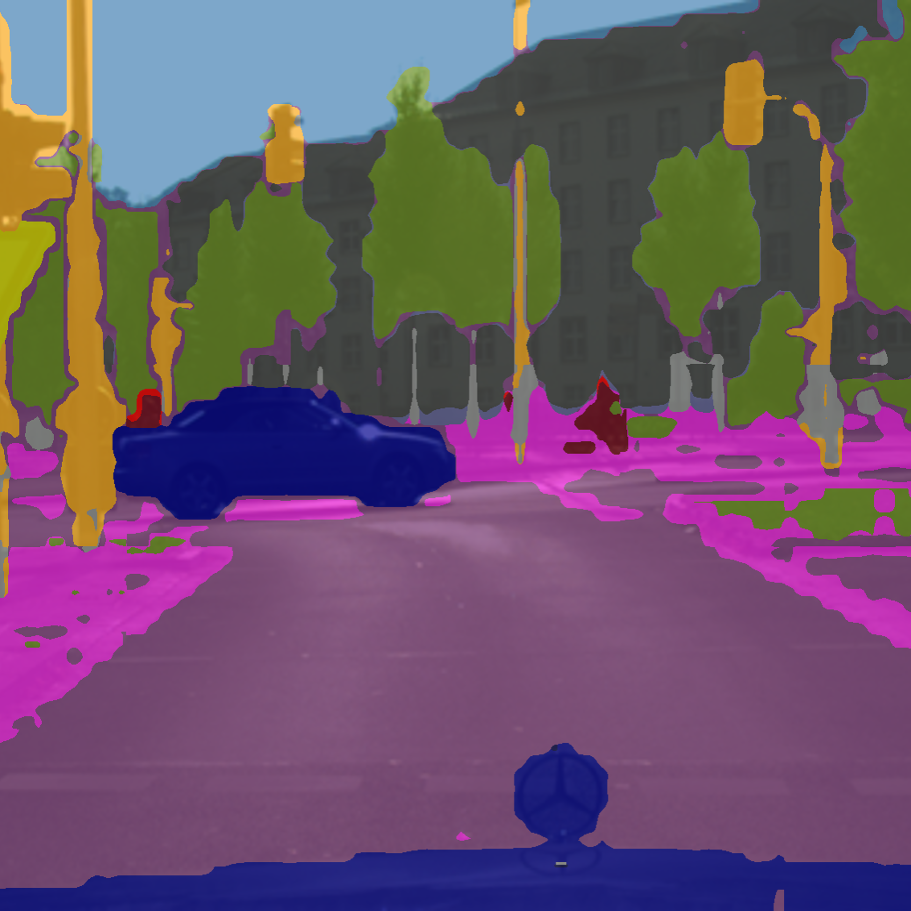
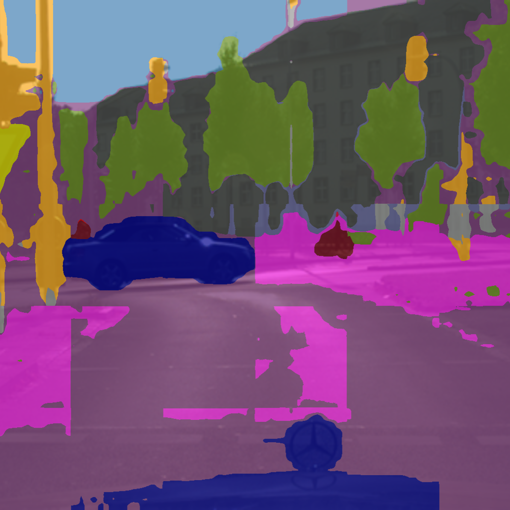
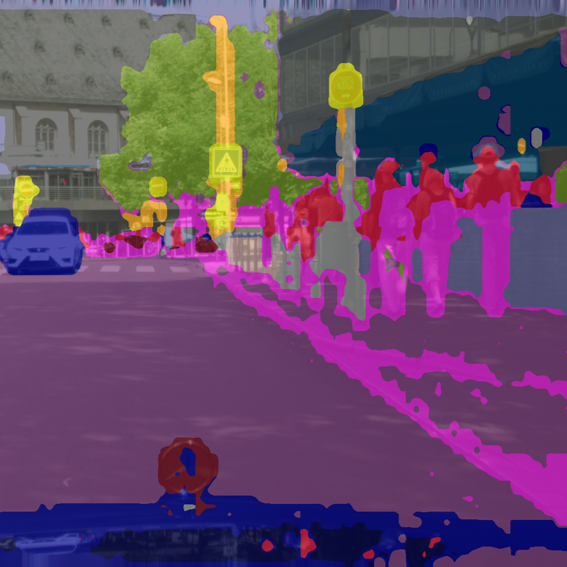
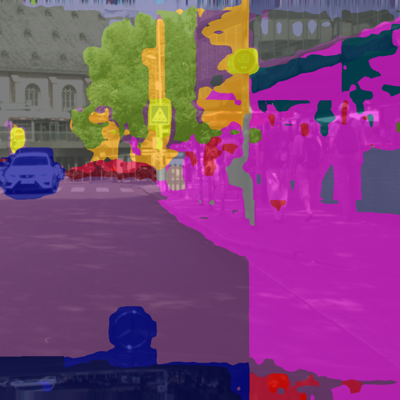
We show visualizations of open-vocabulary semantic segmentation results, highlighting the effectiveness of our method in mitigating the grid artifact.
BibTeX
@article{lee2026gla_clip,
title={Looking Beyond the Window: Global-Local Aligned CLIP for Training-free Open-Vocabulary Semantic Segmentation},
author={Lee, ByeongCheol, Seong, Hyun Seok, Hyun, Sangeek, Park, Gilhan, Moon, WonJun and Heo, Jae-Pil},
booktitle={Proceedings of the IEEE/CVF Conference on Computer Vision and Pattern Recognition (CVPR)},
year={2026}
}